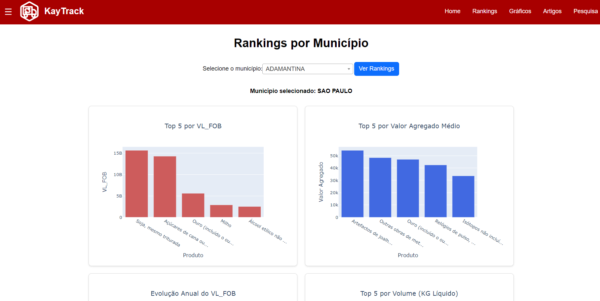

Sobre mim
Nome: Enrico de Chiara Germano
Idade: 20 anos
Formação:
- Cursando Tecnólogo em Desenvolvimento de Software Multiplataforma
Objetivo:
Busco desenvolver minha carreira na área de tecnologia, aplicando e aprimorando meus conhecimentos em desenvolvimento de software. Meu objetivo é contribuir para projetos inovadores, utilizando habilidades técnicas e criativas para resolver problemas e entregar soluções eficientes. Estou comprometido com o aprendizado contínuo e com a construção de uma trajetória profissional sólida no setor de TI.
Currículo
Formação Acadêmica:
- Finalizado Técnico em Informática - Colégio Opção (2019-2021)
- Finalizado Curso de Tecnologia da Informação e Comunicação - Milestones International College (2022-2023)
- Cursando Desenvolvimento de Softwares Multiplataformas - Fatec São José dos Campos (2025-2027)
Certificações:
- Certificado de Inglês para Negócios pela Milestones International College
- Certificado de Inglês Avançado pelo ICBEU
- Certificado de JavaScript pela Fundação Bradesco
- Certificado de Java pela Ektro
- Certificação de Participação da Maratona de Programação FATEC 2025
Competências Técnicas:
- Linguagens: Python, PHP, Java, CSS e JavaScript
- Framework: Flask, React e Bootstrap
- Ferramentas: MySQL, Github, Colab e VSCode
Idiomas:
- Português - Nativo
- Inglês - Avançado
Trabalhos Acadêmicos
Trabalho de Conclusão de Curso - TCC
Título: YourTruck - Site de aluguel de serviços de mudança
Resumo: YourTruck é um site de aluguel de serviços de mudança, parecido com o Uber, desenvolvido como projeto de TCC. O site permite encontrar motoristas de caminhões ou grandes veículos para realizar mudanças ou fretes.
-
Link para o Projeto: Repositório do GitHub
Principais Projetos
Sistema de Análise de dados comerciais - API 1º Semestre, 2025
Descrição: Desenvolvimento um sistema para Análise de dados comerciais do estado de São Paulo
Tecnologias Utilizadas: Colab, Python, AWS, Pandas, Plotly, HTML, CSS
Contribuição: Reduzir o tempo de processamento, Implementação na nuvem
Link para o Projeto: Site no AWS
Link para o Repositório: Repositório do GitHub
